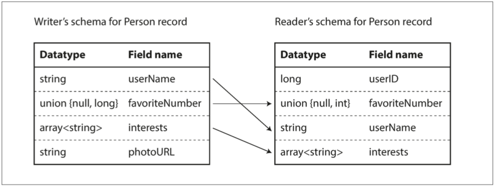

编码与演化
将数据结构转换为网络中的字节或磁盘上的字节的编码方式和演进策略。
在大多数情况下，更改应用程序功能时，也需要更改其存储的数据。
关系数据库通常假定数据库中的所有数据都遵循一个模式：尽管可以更改该模式（ALTER 语句），但在任何时间点都有且仅有一个正确的模式。
读时模式（schema-on-read，或 无模式）数据库不会强制一个模式，因此数据库可以包含在不同时间写入的新老数据格式的混合（请参阅 “文档模型中的模式灵活性” ）。
当数据 格式（format） 或 模式（schema） 发生变化，需要对应用程序代码进行相应的更改：
- 服务端：滚动升级，无需中断服务即可部署新版本；
- 客户端：看用户心情，用户可能相当长一段时间里都不会去升级软件。；
新旧版本的代码，以及新旧数据格式可能会在系统中同时共处。系统想要继续顺利运行，就需要保持 双向兼容性：
- 向后兼容 (backward compatibility)：很容易实现；
新的代码可以读取由旧的代码写入的数据。
- 向前兼容 (forward compatibility)：较难实现，旧版的程序需要忽略新版数据格式中新增的部分；
旧的代码可以读取由新的代码写入的数据。
在 Web 服务中，表述性状态传递（REST） 和 远程过程调用（RPC），以及 消息传递系统（如 Actor 和消息队列）。
数据编码格式
程序通常（至少）使用两种形式的数据：
- 内存中：数据保存在对象、结构体、列表、数组、哈希表、树等结构中；
- 文件/网络发送：某种自包含的字节序列（例如，JSON 文档）；
从内存中表示到字节序列的转换称为 编码（或序列化） ，反过来称为 解码（或反序列化）。
语言特定的格式
编程语言基本都内置支持将内存对象编码为字节序列，如，Java 有 java.io.Serializable\(^{[1]}\)，Ruby 有 Marshal\(^{[2]}\)，Python 有 pickle\(^{[3]}\)等。许多第三方库也存在，例如 Kryo for Java\(^{[4]}\)。
编码库非常方便，用很少的额外代码实现内存对象的保存与恢复。但是它们也有一些深层次的问题
- 语言绑定：其他语言很难读取这种数据；
- 安全隐患：解码过程需要 实例化任意类 的能力，攻击者可以远程执行任意代码\(^{[5，6]}\);
- 兼容性：多版本数据通常是次要的，忽略向前和向后兼容性等问题；
- 效率：往往也是事后才考虑，如 Java 的内置序列化由于其糟糕的性能和臃肿的编码而臭名昭著\(^{[7]}\)
JSON、XML和二进制变体
JSON，XML 属于文本格式，可读性强，但存在一些问题：
- 数字（numbers） 编码有很多模糊之处
- XML 无法区分数字还是碰巧由数字组成的字符串；
- JSON 区分字符串和数字，但不区分整数和浮点数，不能指定精度，大于2\(^{53}\)的整数无法使用 IEEE 754 双精度浮点数精确表示，因此在使用浮点数（例如 JavaScript）的语言进行分析时，这些数字会变得不准确；
- JSON 和 XML 不支持二进制，用 Base64 二进制编码来解决，数据大小增加 33%；
- XML\(^{[8]}\)和 JSON\(^{[9]}\)都有可选的模式支持。这些模式预言相当强大，学习和实现比较复杂；
JSON 和 XML 作为数据交换格式，通常够用且可能会继续流行下来。最难的问题是在于如何让不同的组织达成格式一致。
二进制编码
JSON 比 XML 简洁，但与二进制格式相比还是太占空间：
-
大量二进制编码版本 JSON（MessagePack、BSON、BJSON、UBJSON、BISON 和 Smile 等） 和 XML（例如 WBXML 和 Fast Infoset）的出现
-
没有改变 JSON / XML 的数据模型，其数据大小仍然很大；
下面的示例是用 MessagePack \(^{[10]}\)对下面 json 数据的二进制编码：
二进制编码长度为 66 个字节，仅略小于文本 JSON 编码所取的 81 个字节（删除了空白）。

Thrift与Protocol Buffers
Apache Thrift\(^{[11]}\) 和 Protocol Buffers（protobuf）\(^{[12]}\)是基于相同原理的二进制编码库：
- 需要一个模式来编码任何数据；
- 提供一个代码生成工具，根据模式生成对应语言的类\(^{[13]}\)；
Thrift 接口定义语言（IDL）描述模式如下：
struct Person {
1: required string userName,
2: optional i64 favoriteNumber,
3: optional list<string> interests
}
Protocol Buffers 的等效模式定义看起来非常相似：
- protobuf 3 中移除了
required和optional字段，所有字段都是optional
这里以 protobuf 的二进制编码为例，仅需 33 个字节：

模式演变
模式不可避免地需要随着时间而改变，Thrift 和 Protocol Buffers 如何处理模式更改，同时保持向后兼容？
- 字段标签的变更
- 数据类型的变更
向前兼容性：旧代码可以读取由新代码编写的记录。
- 新的字段，其标签号码不能识别，它可以简单地忽略该字段；
- 只能删除可选的字段（必需字段永远不能删除）
向后兼容性：每个字段都有一个唯一的标签号码，新代码总是可以读取旧代码写的数据
- 添加一个新的字段，你不能设置为必需；初始部署之后 添加的每个字段必须是可选的或具有默认值。
- 删除字段时，新代码只需忽略多余的字段；
改变字段的数据类型，值将失去精度或被截断。
- 例如将一个 32 位的整数变成一个 64 位的整数时，旧代码读新字段会出现截断的情况；
Avro
行的存储格式，作为 Hadoop 的一个子项目在 2009 年开始的，因为 Thrift 不适合 Hadoop 的用例（动态模式）\(^{[14]}\)：
- 写入时，模式会存在文件中，但是读取文件时可以指定其它的读取模式；
其模式文件示例如下：
{
"namespace":"com.xliuqq.cs.avro.bean",
"type": "record",
"name": "Person",
"fields": [
{"name": "userName", "type": "string"},
{"name": "favoriteNumber", "type": ["null", "long"], "default": null},
{"name": "interests", "type": {"type": "array", "items": "string"}}
]
}
Avro 的关键思想是 Writer 模式(写数据时的模式）和 Reader 模式（读数据时的模式）不必是相同，只需兼容：模式解析通过字段名匹配字段
- 如果读取数据的代码遇到出现在 Writer 模式中但不在 Reader 模式中的字段，则忽略它；
- 如果读取数据的代码需要某个字段，但是 Writer 模式不包含该名称的字段，则使用在 Reader 模式中声明的默认值填充。

模式演变
向前兼容：
- 将新版本的模式作为 Writer，并将旧版本的模式作为 Reader
向后兼容：
- 作为 Reader 的新版本模式和作为 Writer 的旧版本模式；
- Reader 模式可以包含字段名称的别名，所以它可以匹配旧 Writer 的模式字段名称与别名，但不能向前兼容；
- 向联合类型添加分支也是向后兼容的，但不能向前兼容。
保证兼容性：
- 只能添加或删除具有默认值的字段；
动态生成的模式
Avro 为静态类型编程语言提供了可选的代码生成功能，但是它也可以在不生成任何代码的情况下使用。
- 使用 Avro 库打开 avro文件（嵌入Write模式），并以与查看 JSON 文件相同的方式查看数据。该文件是自描述的，因为它包含所有必要的元数据。
- 适用于动态类型的数据处理语言如 Apache Pig\(^{[15]}\)，打开Avro 文件，分析它们并编写派生数据集以 Avro 格式输出文件，而无需考虑模式。
模式的优点
Protocol Buffers、Thrift 和 Avro 都使用模式来描述二进制编码格式，但编码所基于的想法绝不是新的：
- ASN.1 是1984 年首次被标准化的模式定义语言\(^{[16]}\)，其二进制编码（DER）仍然被用于编码 SSL 证书（X.509）\(^{[17]}\)；
- 它也非常复杂，而且没有好的配套文档，所以 ASN.1 可能不是新应用程序的好选择。
许多数据系统也为其数据实现了某种专有的二进制编码，如关系数据库都有一个网络协议。
- 数据库供应商提供将来自数据库的网络协议的响应解码为内存数据结构的驱动程序（例如使用 ODBC 或 JDBC API）。
模式演化保持了与 JSON 数据库提供的无模式 / 读时模式相同的灵活性，同时还可以更好地保证你的数据并提供更好的工具：
- 存储：比各种 “二进制 JSON” 变体更紧凑，因为它们可以省略编码数据中的字段名称；
- 时效：模式是有价值的文档（解码必需），可以确定它是最新的（而手动维护的文档可能很容易偏离现实）；
- 兼容：维护一个模式的数据库允许你在部署任何内容之前检查模式更改的向前和向后兼容性；
- 安全：静态类型编程语言，从模式生成代码可以在编译时进行类型检查
数据流模型
兼容性是编码数据的一个进程和解码它的另一个进程之间的一种关系。数据可以通过多种方式从一个流程流向另一个流程。
数据库中的数据流
在数据库中，写入数据库的过程对数据进行编码，从数据库读取的过程对数据进行解码。
- 向后兼容：新版本的代码需要解码旧版本写的数据，这个是必要的；
- 向前兼容：旧版本的代码解码新版本的数据，无法强制所有的客户端升级；
- 旧版本更新数据时，要保证新的字段不变，即使他不能被解释；
- 即更新数据不能全量更新，只能做部分更新（全量更新即覆盖，新字段的值会丢失）
示例：图 4-7 旧版本的应用程序更新以前由较新版本的应用程序编写的数据时，如果不小心，数据可能会丢失

数据的生命周期超出代码的生命周期：
- 数据库内容中五年前的数据，除非对其进行显式重写，否则它仍然会以原始编码形式存在
- 可以将数据重写（迁移）到一个新的模式，但对于大数据集代价昂贵；
模式演变允许整个数据库看起来好像是用单个模式编码，即使底层存储可能包含用各种历史版本的模式编码的记录
归档存储：为数据库创建一个快照
- 使用最新模式进行编码，即使源数据库中的原始编码包含来自不同时代的模式版本的混合；
- 数据转储是一次写入的，而且以后是不可变，Avro 对象容器文件等格式非常适合（包括编码为列式格式 Parquest）；
服务中的数据流：REST与RPC
面向服务的体系结构（service-oriented architecture，SOA），最近被改进和更名为 微服务架构\(^{[18,19]}\)
- 将大型应用程序按照功能区域分解为较小的服务，当一个服务需要来自另一个服务的某些功能或数据时，就会向另一个服务发出请求；
- 关键设计目标：通过使服务独立部署和演化来使应用程序更易于更改和维护。
- 期望服务器和客户端的旧版本和新版本同时运行，服务器和客户端使用的数据编码必须在不同版本的服务 API 之间兼容
SOAP Web 服务的 API 使用称为 Web 服务描述语言（WSDL）的基于 XML 的语言来描述：基本不再受青睐
- SOAP 消息通常因为过于复杂而无法手动构建，依赖于工具支持，代码生成和 IDE\(^{[20]}\)
- SOAP 及其各种扩展表面上是标准化，但不同厂商的实现之间的互操作性往往会造成问题\(^{[21]}\)
REST 一个基于 HTTP 原则的设计哲学\(^{[22,23]}\)，根据 REST 原则设计的 API 称为 RESTful
- 简单的数据格式，使用 URL 来标识资源，并使用 HTTP 功能进行缓存控制，身份验证和内容类型协商；
- 涉及较少的代码生成和自动化工具，如OpenAPI，也称为 Swagger\(^{[24]}\)；
远程过程调用（RPC）的问题
REST 的部分吸引力在于，它并不试图隐藏它是一个网络协议的事实（尽管这似乎并没有阻止人们在 REST 之上构建 RPC 库）。
Web 服务仅仅是通过网络进行 API 请求的一系列技术的最新版本，还有其它技术
-
Enterprise JavaBeans（EJB）和 Java 的 远程方法调用（RMI） 仅限于 Java；
-
分布式组件对象模型（DCOM） 仅限于 Microsoft 平台；
-
公共对象请求代理体系结构（CORBA） 过于复杂，不提供向后或向前兼容性\(^{[25]}\)
远程过程调用（RPC）\(^{[26]}\)，1970年出现，通过函数调用和网络请求（位置透明），实现跨进程的数据通信：其跟本地函数调用本质区别：
- 网络请求是不可预测，不在你的控制范围之内。网络问题很常见，因此要做容错处理，如例如重试失败的请求；
- 网络请求有另一个可能的结果：由于超时，它返回时可能没有结果。无法知道请求是否通过；
- 如果失败重试，重试将导致该操作被执行多次，除非在协议中建立数据去重机制（幂等性，即 idempotence）；
- 网络请求比函数调用要慢得多，而且其延迟也是非常可变；
- 客户端和服务可以用不同的编程语言实现，但不是所有的语言都具有相同的类型（如 JavaScript 的数字大于\(2^{53}\)的问题 ）；
RPC的当前方向
新一代的 RPC 框架更加明确的是，远程请求与本地函数调用不同，如 Thritf/Avro自带的RPC，Protobuf的gRPC等。
REST 似乎是公共 API 的主要风格。RPC 框架的主要重点在于同一组织拥有的服务之间的请求，通常在同一数据中心内：
- 方便实验和调试，能被所有主流的编程语言和平台所支持；
- 有大量可用的工具（服务器、缓存、负载平衡器、代理、防火墙、监控、调试工具、测试工具等）的生态系统；
数据编码与RPC的演化
RPC 方案的向后和向前兼容性属性是从它使用的编码方式中继承而来。
通过服务进行数据流的情况下做一个简化的假设：假定所有的服务器都会先更新，其次是所有的客户端
- 请求上具有向后兼容性：新的服务端处理旧的客户端发送的数据；
- 响应上具有向前兼容性：旧的服务端处理新的客户端响应的数据；
RPC 经常被用于跨越组织边界的通信，所以服务的兼容性变得更加困难，因此服务的提供者经常无法控制其客户，也不能强迫他们升级：
- 需要进行兼容性更改，则服务提供商通常会并排维护多个版本的服务 API；
- RESTful API，常用的方法是在 URL 或 HTTP Accept 头中使用版本号\(^{[27]}\)；
消息传递中的数据流
RPC 和数据库之间的异步消息传递系统：
- 与 RPC 类似，因为客户端的请求（通常称为消息）以低延迟传送到另一个进程
- 与数据库类似，不是通过直接的网络连接发送消息，而是通过称为消息代理（也称为消息队列或面向消息的中间件）的中介来临时存储消息
与直接 RPC 相比，使用消息代理有几个优点：
- 如果收件人不可用或过载，可以充当缓冲区，从而提高系统的可靠性
- 自动将消息重新发送到已经崩溃的进程，从而防止消息丢失
- 避免发件人需要知道收件人的 IP 地址和端口号
- 允许将一条消息发送给多个收件人
- 将发件人与收件人逻辑分离
与 RPC 相比，差异在于消息传递通信通常是单向的：发送者通常不期望收到其消息的回复。
消息代理
开源实现：RabbitMQ、ActiveMQ、Apache Kafka、Apache Pulsar
消息代理的使用方式如下：一个进程将消息发送到指定的队列或主题，代理确保将消息传递给那个队列或主题的一个或多个消费者或订阅者。
-
在同一主题上可以有许多生产者和许多消费者；
-
消息代理通常不会执行任何特定的数据模型，消息只是包含一些元数据的字节序列；
-
任意编码模式，向前/向后兼容性由编码决定；
- 重新发布消息，需要小心保留未知字段，防止出现 4-7 的旧版本代码全量更新数导致新字段丢失的问题；
分布式的Actor框架
Actor 模型是单个进程中并发的编程模型：
- 逻辑被封装在 actor 中，通常代表一个客户或实体，它可能有一些本地状态（不与其他任何角色共享）；
- 通过发送和接收异步消息与其他角色（actor ）通信，不保证消息传送，消息可能会丢失（位置透明性比RPC好）；
- 每个角色一次只能处理一条消息，不用考虑线程安全，角色可以由框架独立调度；
分布式 Actor 框架：用于跨多个节点伸缩应用程序
-
将消息代理和 actor 编程模型集成到一个框架中
-
消息被透明地编码成字节序列，通过网络发送，并在另一侧解码
- 基于 actor 的应用程序的滚动升级，则仍然需要担心向前和向后兼容性问题
流行的分布式 actor 框架Akka 处理消息编码：
- 默认情况下，Akka 使用 Java 的内置序列化，不提供向前或向后兼容性，但可以自己自定义编码\(^{[28]}\)；
参考文献
- “Java Object Serialization Specification,” docs.oracle.com, 2010.
- “Ruby 2.2.0 API Documentation,” ruby-doc.org, Dec 2014.
- “The Python 3.4.3 Standard Library Reference Manual,” docs.python.org, February 2015.
- “EsotericSoftware/kryo,” github.com, October 2014.
- Steve Breen: “What Do WebLogic, WebSphere, JBoss, Jenkins, OpenNMS, and Your Application Have in Common? This Vulnerability,” foxglovesecurity.com, November 6, 2015.
- Patrick McKenzie: “What the Rails Security Issue Means for Your Startup,” kalzumeus.com, January 31, 2013.
- Eishay Smith: “jvm-serializers wiki,” github.com, November 2014.
- Shudi (Sandy) Gao, C. M. Sperberg-McQueen, and Henry S. Thompson: “XML Schema 1.1,” W3C Recommendation, May 2001.
- Francis Galiegue, Kris Zyp, and Gary Court: “JSON Schema,” IETF Internet-Draft, February 2013.
- “MessagePack Specification,” msgpack.org.
- Mark Slee, Aditya Agarwal, and Marc Kwiatkowski: “Thrift: Scalable Cross-Language Services Implementation,” Facebook technical report, April 2007.
- “Protocol Buffers Developer Guide,” Google, Inc., developers.google.com.
- “A Matrix of the Features Each Individual Language Library Supports,” wiki.apache.org.
- Doug Cutting, Chad Walters, Jim Kellerman, et al.: “[PROPOSAL] New Subproject: Avro,” email thread on hadoop-general mailing list, mail-archives.apache.org, April 2009.
- “Apache Pig 0.14.0 Documentation,” pig.apache.org, November 2014.
- Russell Housley, Warwick Ford, Tim Polk, and David Solo: “RFC 2459: Internet X.509 Public Key Infrastructure: Certificate and CRL Profile,” IETF Network Working Group, Standards Track, January 1999.
- Lev Walkin: “Question: Extensibility and Dropping Fields,” lionet.info, September 21, 2010.
- Sam Newman: Building Microservices. O'Reilly Media, 2015. ISBN: 978-1-491-95035-7
- Chris Richardson: “Microservices: Decomposing Applications for Deployability and Scalability,” infoq.com, May 25, 2014.
- Pete Lacey: “The S Stands for Simple,” harmful.cat-v.org, November 15, 2006.
- Stefan Tilkov: “Interview: Pete Lacey Criticizes Web Services,” infoq.com, December 12, 2006.
- Roy Thomas Fielding: “Architectural Styles and the Design of Network-Based Software Architectures,” PhD Thesis, University of California, Irvine, 2000.
- Roy Thomas Fielding: “REST APIs Must Be Hypertext-Driven,” roy.gbiv.com, October 20 2008.
- “OpenAPI Specification (fka Swagger RESTful API Documentation Specification) Version 2.0,” swagger.io, September 8, 2014.
- Michi Henning: “The Rise and Fall of CORBA,” ACM Queue, volume 4, number 5, pages 28–34, June 2006. doi:10.1145/1142031.1142044
- Andrew D. Birrell and Bruce Jay Nelson: “Implementing Remote Procedure Calls,” ACM Transactions on Computer Systems (TOCS), volume 2, number 1, pages 39–59, February 1984. doi:10.1145/2080.357392
- Troy Hunt: “Your API Versioning Is Wrong, Which Is Why I Decided to Do It 3 Different Wrong Ways,” troyhunt.com, February 10, 2014.
- Jonas Bonér: “Upgrade in an Akka Cluster,” email to akka-user mailing list, grokbase.com, August 28, 2013.